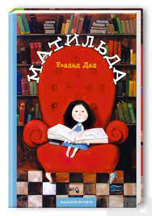
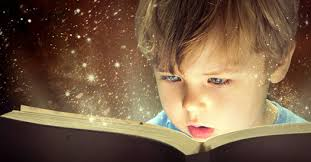
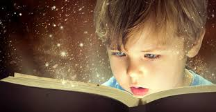

«Голодні ігри» — роман американської письменниці Сюзанни Коллінз про шістнадцятирічну Катніс Евердін,
яка змушена брати участь у так званих Голодних іграх на виживання. Книжка була опублікована
видавництвом «Scholastic Press» у 2008 році.
Кульбабове вино, автор Рей Бредбері
«Кульбабове вино» — роман Рея Бредбері, вперше виданий у 1957 році. «Кульбабове вино» — твір, який
вирізняється серед літературної творчості Рея Бредбері особистими переживаннями письменника. Це
багато в чому автобіографічна книга, події якої відбувається влітку 1928 року у вигаданому місті
Грін-Таун, штат Іллінойс.
Путівник по Галактиці для космотуристів, автор Дуглас Адамс
«Путівник по Галактиці для космотуристів» — гумористичний науково-фантастичний роман британського
письменника Дугласа Адамса. Перша частина серії «Путівник Галактикою».
Чроніки Нарнії, Клайв Стейплз Льюїс
«Хроніки Нарнії» — цикл із семи дитячих фентезійних книг, написаних Клайвом Стейплзом Льюїсом. В них
розповідається про пригоди дітей у казковій країні під назвою Нарнія, де тварини можуть говорити,
магія нікого не дивує, а добро бореться зі злом.
Країна Мумі-Тролів,Туве Янссон.
Долину мумі-тролів заселяють мумі-тролі, хропусі, мумрики, мудрики, гемулі, мюмлі, чепурулі з
капарулями та інші істоти, наділені рисами і людей, і тварин. У них є «обличчя», і своїми
характерами, поведінкою, вчинками, звичаями і звичками ці персонажі надзвичайно схожі на людей: вони
бліднуть, червоніють, вибачаються, дякують, п'ють каву і сік, танцюють, сваряться. Але мешканці
долини Мумі-тролів зовсім не люди — у багатьох з них є лапи та хвіст

Матильда,Роальд Дал
У 2012 році «Матильда» посіла 30-те місце серед дитячих романів усіх часів за результатами
опитування, опублікованого щомісячником «School Library Journal», що складається головним чином з
аудиторії США. Це була перша з чотирьох книг Дала серед 100 Найкращих, що є більше, ніж в будь-якого
іншого письменника.[5] Time (magazine) включив «Матильду» до свого списку 100 Найкращих Книг для
Молоді Усіх Часів.[6] Світові продажі досягли 17 мільйонів, а з 2016 року продажі зросли до такої
міри, що це перевершує інші роботи Дала.
Гарі Поттер,Джоан Роулинг.
Га́ррі Джеймс По́ттер — вигаданий персонаж і головний герой знаменитої серії романів англійської
письменниці Джоан К. Ролінґ. Історія описує події у Школі Чарів і Чаклунства Гоґвортс, де його
найкращими друзями є чарівники Рон Візлі і Герміона Ґрейнджер.
 
